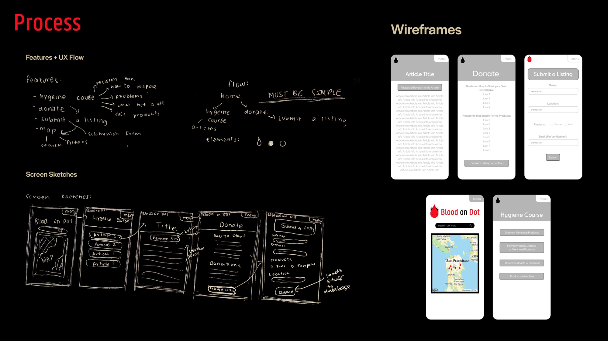
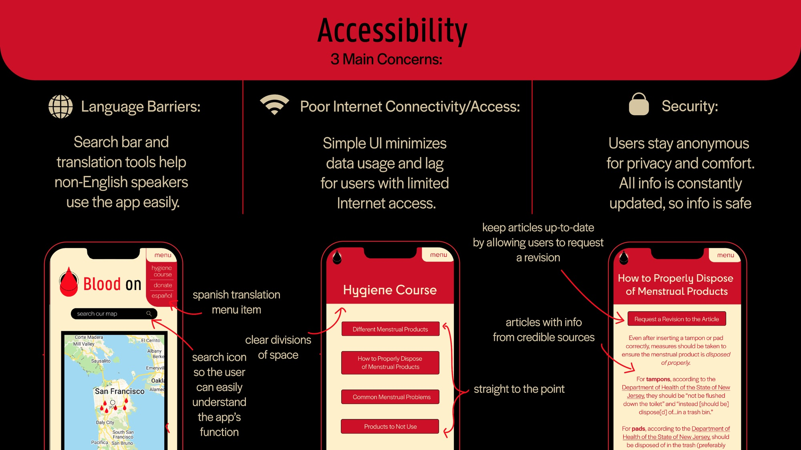
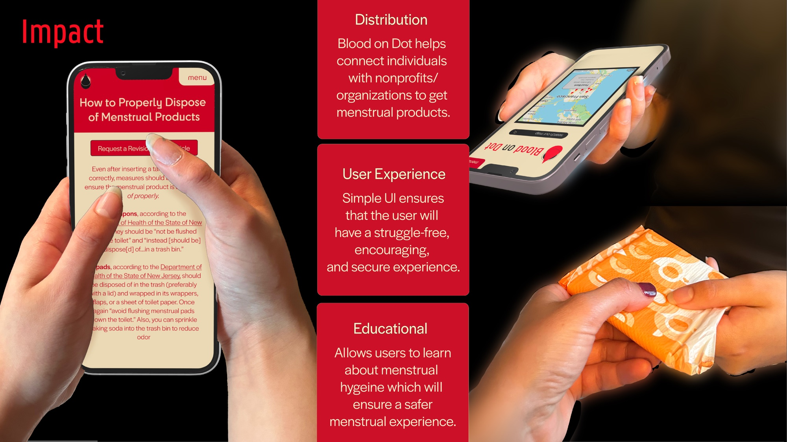

Blood on Dot: Period Poverty App — UI/UX, Branding, Front End Programming
Work in progress
Software used: Figma, Adobe Illustrator, Node.js, Swift, JavaScript
Blood on Dot is an app where you can search for nonprofits, individual-led events, public showers, public restrooms, and other places with free period/period-related products. You can also add an event to be added to the map after details are verified about it to ensure safety. Additionally, there is short educational course on menstrual hygiene.

Figma File Link: https://www.figma.com/design/b9Qen8Je0CEkQHj1x0kXWG/bloodondot?node-id=0-1&p=f
Process

Ideation
While volunteering for a period poverty nonprofit, I noticed how decentralized their (and other nonprofit’s) events were to people who needed the resources the most. So I decided to create an open-source map where period poverty events were visible to people using the app.

User Testing
Once I had created a hi-fi prototype, I went to different period poverty nonprofits in Houston and asked them to use the app to make a listing for a period poverty event they were hosting. In addition, we had a flier asking for volunteers who have struggled with period poverty to help test looking for period poverty events on our app. The volunteers were given free period products during the user testing in partnership with the period poverty nonprofits we worked with. The overall response was that the map needed to be larger and that a Spanish translation of the app should be available (a feature we are working on).

